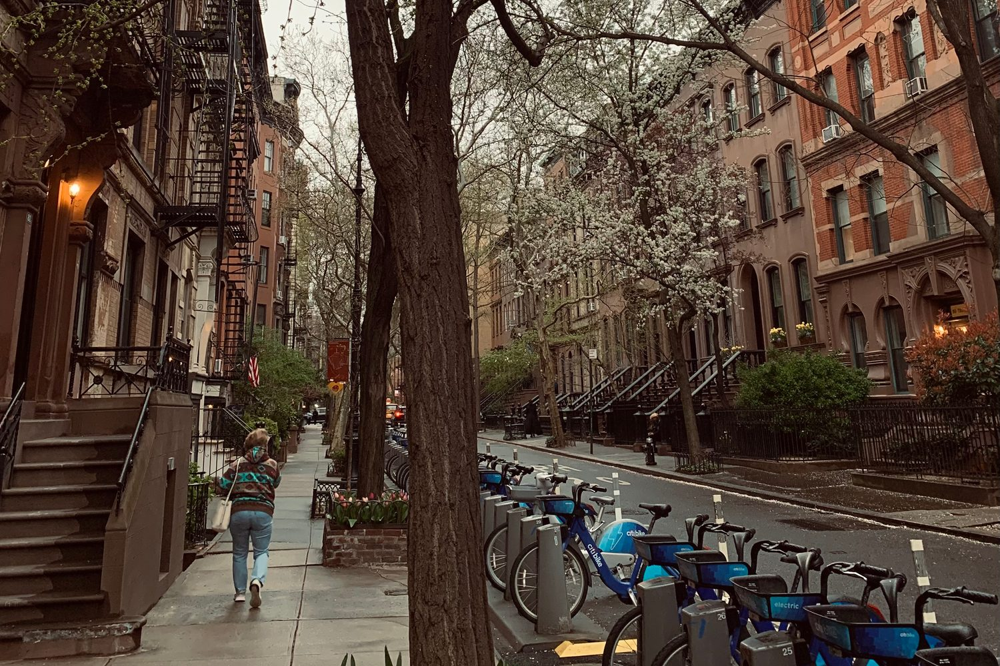

Manhattan · Neighborhood guide
West Village Neighborhood Guide
Boundaries, housing, subway lines, parks and September 2026 market figures for Manhattan's West Village.
By Glenn Velasco
Licensed Real Estate Salesperson · Compass
Updated

The West Village is the western part of Greenwich Village, running from the Hudson River east toward Greenwich Avenue and Seventh Avenue, between 14th Street and Houston Street. Its streets predate Manhattan's grid, and much of it is in landmarked historic districts, with 19th-century rowhouses, prewar co-ops and newer condos along the waterfront. This guide covers where the neighborhood begins and ends, what kinds of homes you'll find, how to get around, and what the market looks like now. Glenn Velasco is a Licensed Real Estate Salesperson at Compass who works with buyers, sellers and renters in the West Village.
01 / Boundaries
Where is the West Village? Boundaries and the street plan
The West Village is the western part of Greenwich Village. It is bounded by the Hudson River on the west and 14th Street on the north. Its eastern edge is given as Greenwich Avenue, Seventh Avenue or Sixth Avenue, and its southern edge as Christopher Street or Houston Street. Neighborhood boundaries in New York City aren't officially set, so listing and data sites may draw them differently. StreetEasy, for example, reports the West Village and Greenwich Village as separate areas. The blocks closest to the river are often called the Far West Village.
Much of the West Village keeps an 18th-century street pattern that predates the city's 1811 grid, which is why streets meet at angles and West 4th Street crosses West 10th, 11th and 12th Streets before ending at West 13th. The neighborhood is in Manhattan Community District 2. Most of it is in ZIP code 10014, with 10011 north of Greenwich Avenue.
02 / History
A short history: landmarks and historic districts
The NYC Landmarks Preservation Commission created the Greenwich Village Historic District in 1969. It covers more than 50 blocks and was, for four decades, the city's largest historic district. Later designations added the Gansevoort Market Historic District (2003, 112 buildings on 11 blocks), the Weehawken Street Historic District (2006, 14 buildings) and Greenwich Village Historic District Extension I (2006, 46 buildings). Westbeth, the former Bell Telephone Laboratories complex, was designated a landmark in 2011. Zoning changes in 2005 (the Far West Village rezoning) and 2010 (Washington and Greenwich Streets) set height limits for new buildings.
The Stonewall Inn at 53 Christopher Street is a National Historic Landmark and part of the Stonewall National Monument. St. Luke in the Fields dates to 1820, the Cherry Lane Theatre at 38 Commerce Street opened in 1924, and the Village Vanguard opened in 1935.
03 / Housing
West Village apartments and townhouses: co-ops and condos
Rowhouses and townhouses
Many West Village blocks are lined with 19th-century rowhouses, some still whole-house townhouses and others divided into apartments. Most are inside historic districts, where exterior changes need Landmarks approval, which is worth knowing before you plan a renovation. If you're looking at West Village townhouses for sale, ask early whether the house is a single-family home or divided into apartments, because that shapes the certificate of occupancy, financing and any renovation plans.
Co-ops and prewar apartment buildings
Prewar co-op buildings and walk-ups make up much of the apartment stock. Co-ops require board approval and a full financial package, and many limit financing, subletting or pied-à-terre use. If you're coming from abroad, condos are usually the simpler route to ownership, because co-op boards often ask for U.S. financial history. Glenn can walk you through the difference in English, Spanish, Italian or French.
Condos, the waterfront and rentals
Condos include conversions of older buildings as well as newer buildings, including some near the Hudson River. Rentals range from walk-up apartments to units in condos and co-ops rented by their owners, where the building's own rules apply.
04 / Market snapshot
West Village real estate market, September 2026
These figures come from public data sources, each measured differently, so read them as a range rather than a single price:
- Median asking price
- $1,785,000
- StreetEasy Data Dashboard, September 2026. This is the median asking price of listings that month.
- Median asking rent
- $5,995/mo
- StreetEasy Data Dashboard, September 2026
- Median sale price
- $2,353,840
- Over the three months ending September 2026, per Redfin, which reports 135 homes sold, a median of 30 days on market and homes selling at 100.5% of list price.
Sources: StreetEasy Data Dashboard, September 2026; Redfin West Village Housing Market, three months ending September 2026.
These medians move a lot from month to month. StreetEasy's median asking price was $1,500,000 in August 2026 and between $2,137,500 and $2,175,000 from May to July. Redfin's median is up 30.8% from a year earlier, a change that partly reflects which homes happened to sell; townhouse sales push the median up. Whether you're weighing West Village apartments for sale or for rent, Glenn can pull recent comparable sales and rentals for the building you have in mind. If you already own in the West Village, you can request a free valuation.
05 / Subway lines
Getting around: West Village subway lines
The West Village is served by these stations, with the closest stop depending on the block:
- Christopher St–Stonewall (1), on Seventh Avenue South
- 14 St (1, 2, 3), at Seventh Avenue on the northern edge
- 14 St (A, C, E) and 8 Av (L), at Eighth Avenue on the northern edge
- Houston St (1), at the southern edge
- W 4 St–Wash Sq (A, B, C, D, E, F, M), at Sixth Avenue on the eastern edge
PATH trains to New Jersey stop at Christopher Street and at 9th Street. Blocks in the Far West Village are a longer walk from the subway.
06 / Parks, libraries and landmarks
Parks, libraries and landmarks
Hudson River Park runs along the West Village waterfront. The whole park covers 550 acres along more than four miles of Manhattan's west side; it was established by the Hudson River Park Act of 1998 and is run by the Hudson River Park Trust. The southern end of the High Line, a park built on an elevated rail line that opened in 2009, is at Gansevoort Street, next to the Whitney Museum of American Art, which opened there in 2015. The New York Public Library has two branches here: the Jefferson Market Library at 425 Sixth Avenue, in a former courthouse built in 1874–77 that became a library in 1967, and the Hudson Park Library at 66 Leroy Street, a Carnegie building from 1906.
07 / Public schools
Public schools
Public schools. The West Village is in Community School District 2. Blocks in the northern part fall in the published zone for P.S. 41 Greenwich Village, at 116 West 11th Street, and blocks farther south fall in the zone for P.S. 3 Charrette School, at 490 Hudson Street, so the zoned school depends on the exact address. School zones change, so confirm current zoning and school information for any address with NYC Public Schools' Find a School (opens in a new tab) search.
08 / Buying or renting with Glenn
Buying or renting in the West Village with Glenn
Buying in the West Village comes down to understanding the building: whether it's a co-op or a condo and what the board requires, the condition of a 19th-century rowhouse, landmark rules, the offering plan if it's new construction, and how a particular home compares with similar ones nearby. Glenn handles that work for buyers, sellers and renters. As part of the M Team at Compass, he specializes in international buyers and investors, condos, co-ops and rentals, and he works in English, Spanish, Italian and French.
Planning a purchase? Start with the Buyer's Guide. Looking to rent? The Renter's Guide covers documents, income requirements and applications. Then contact Glenn at 929.392.3707 or glenn.velasco@compass.com.
09 / FAQ
West Village FAQ
What are the boundaries of the West Village?
The West Village is the western part of Greenwich Village, bounded by the Hudson River and 14th Street. Its eastern edge is given as Greenwich Avenue, Seventh Avenue or Sixth Avenue, and its southern edge as Christopher Street or Houston Street. Neighborhood boundaries in New York City aren't officially set, so other sources may differ.
Is the West Village the same as Greenwich Village?
The West Village is the western part of Greenwich Village, so the names overlap. There's no official line between them, and the West Village's eastern edge is given as Greenwich Avenue, Seventh Avenue or Sixth Avenue. Some data sites, including StreetEasy, report the West Village and Greenwich Village separately, so check which area a figure covers.
Why don't West Village streets follow the grid?
Much of the West Village keeps an 18th-century street pattern that predates Manhattan's 1811 grid plan. That's why streets meet at angles and West 4th Street crosses West 10th, 11th and 12th Streets.
What subway lines serve the West Village?
The 1 stops at Christopher Street–Stonewall and Houston Street, the 1, 2 and 3 at 14th Street and Seventh Avenue, the A, C, E and L at 14th Street and Eighth Avenue, and the A, B, C, D, E, F and M at West 4th Street–Washington Square. PATH trains stop at Christopher Street and 9th Street.
What kinds of homes are in the West Village?
19th-century rowhouses and townhouses, prewar co-ops and walk-ups, and condos, including newer buildings near the Hudson River. Much of the neighborhood is in landmarked historic districts.
How much does it cost to live in the West Village?
StreetEasy's September 2026 data shows a median asking price of $1,785,000 and a median asking rent of $5,995 a month. Redfin reports a median sale price of $2,353,840 for the three months ending September 2026. Prices vary widely by building and home, so ask Glenn for recent comparable sales.
Can Glenn Velasco help me buy or rent in the West Village in Spanish, Italian or French?
Yes. Glenn Velasco is a Licensed Real Estate Salesperson at Compass who works with buyers, sellers and renters in English, Spanish, Italian and French, including international buyers. Reach him at 929.392.3707 or glenn.velasco@compass.com.
10 / Sources
Sources
Sources, each checked October 28, 2026: StreetEasy Data Dashboard, September 2026 (opens in a new tab); Redfin, West Village Housing Market (opens in a new tab); Wikipedia, West Village (opens in a new tab); Hudson River Park Trust, The Park (opens in a new tab); Wikipedia, High Line (opens in a new tab); MTA subway stations data (opens in a new tab); NYC Public Schools, P.S. 41 Greenwich Village (opens in a new tab); NYC Public Schools, P.S. 3 Charrette School (opens in a new tab); NYC Open Data, School Zones 2024–2025 (opens in a new tab); NYC Public Schools, Find a School (opens in a new tab).